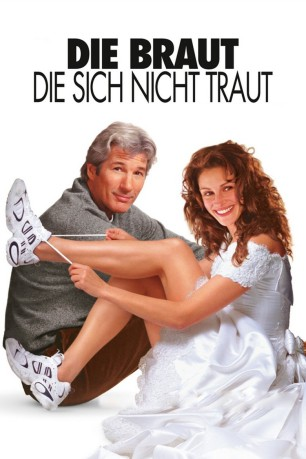
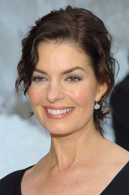
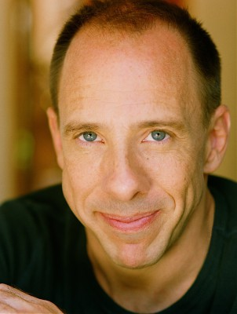

#5665 Die Braut, die sich nicht traut
Alternativ: Runaway Bride
 
 IMDB-Wertung: 5.5 / 10
IMDB-Wertung: 5.5 / 10  Metascore: 0
Metascore: 0 
In New York City arbeitet Ike Graham als Journalist für USA Today. Eine bissige Kolumne über eine gewisse Maggie Carpenter, die bereits dreimal einen potenziellen Ehemann vor dem Altar versetzt hat, kostet Ike den hochdotierten Job. Auf Rache sinnend, sucht er die berühmt-berüchtigte Beinahe-Braut in deren, in der tiefen Provinz gelegenen Heimatstädchen auf. Sein Ziel: eine gesalzene Home Story, die Maggie endgültig als treuloses Weib outen und seinen guten Ruf wiederherstellen soll...
Jahr: 1999
Dauer: 111 Minuten
FSK: 0
Land: USA Studio: Paramount PicturesTonspuren: DD5.1 - ,
Untertitel:
Auflösung: 1080p (1920x816) Größe: 8314 MB
Genre: Komödie, Liebe
Regisseur:  Garry Marshall
Garry Marshall
Drehbuch: Danny King
Soundtrack:
Darsteller:
 Julia Roberts als Maggie Carpenter
Julia Roberts als Maggie Carpenter Richard Gere als Ike Graham
Richard Gere als Ike Graham Joan Cusack als Peggy Flemming
Joan Cusack als Peggy Flemming Hector Elizondo als Fisher
Hector Elizondo als Fisher Rita Wilson als Ellie Graham
Rita Wilson als Ellie Graham Paul Dooley als Walter Carpenter
Paul Dooley als Walter Carpenter Christopher Meloni als Coach Bob Kelly
Christopher Meloni als Coach Bob Kelly Donal Logue als Priest Brian Norris
Donal Logue als Priest Brian Norris Reg Rogers als George 'Bug Guy' Swilling
Reg Rogers als George 'Bug Guy' Swilling Yul Vazquez als Dead Head Gill Chavez
Yul Vazquez als Dead Head Gill Chavez Jane Morris als Mrs. Pressman
Jane Morris als Mrs. Pressman Lisa Roberts Gillan als Elaine from Manhattan
Lisa Roberts Gillan als Elaine from Manhattan Kathleen Marshall als Cousin Cindy
Kathleen Marshall als Cousin Cindy- Jean Schertler als Grandma
- Tom Mason als Final Wedding Pastor
-  Sela Ward als Pretty Woman in Bar
- Sandra Taylor als Model Shelby
- Thong Nguyen als Fashion Shoot Photographer
-  Patrick Richwood als T.V. Host
- Kevin Murray als Petey
- Tiffany Paulsen als Reporter Tiffany
 Shannon Wilcox als Luau Lady
Shannon Wilcox als Luau Lady Linda Larkin als Gill's Girlfriend
Linda Larkin als Gill's Girlfriend Marisol Correa als Office Staff & Pedestrian , uncredited
Marisol Correa als Office Staff & Pedestrian , uncredited- Tom Cutler als Reporter , uncredited
- Rebekah Hoyle als Office Assistant , uncredited
- Barbara Marshall als Bridal Shop Customer Polly , uncredited
 Garry Marshall als First Baseman in Softball , uncredited
Garry Marshall als First Baseman in Softball , uncredited- Scott Marshall als Motel Clerk Lee , uncredited
 Laurie Metcalf als Betty Trout , uncredited
Laurie Metcalf als Betty Trout , uncredited Larry Miller als N.Y.C. Bartender Kevin , uncredited
Larry Miller als N.Y.C. Bartender Kevin , uncredited- Ryan Slattery als Wedding Guest , uncredited
- Tom Hines als Cory Flemming
- Garrett Wright als Student Dennis
- Marvin Braverman als T-Shirt Vendor
- Yvonne Pollack als T-Shirt Woman
- Joy Rosenthal als Limo Lady
- John Goldman als Construction Man
- Karen Stirgwolt als Office Worker Frances
- Lee McKenna als Mrs. Whittenmeyer
- Marty Nadler als Travelling Salesman
- Allan Kent als Lou Trout
- James Richardson als Mr. Paxton
- Duncan Lam als Dragged Little Boy
- Julie Paris als Reporter Murphy
- Dina Napoli als Reporter Dina
- Jacqui Allen als Reporter Jacqui
- Jack Hoffman als Reporter Jack
- Cheryl Frazel als Reporter Cheryl
- Gregg Goulet als Church Organist
Datei: X:\1999\Braut, die sich nicht traut, Die (1999, FSK0, 1920x816).mkv seit 03.03.2017
Festplatte: HD 1996-2002
 Es gibt insgesamt 81 Filme in der Gruppe '1999'
Es gibt insgesamt 81 Filme in der Gruppe '1999'